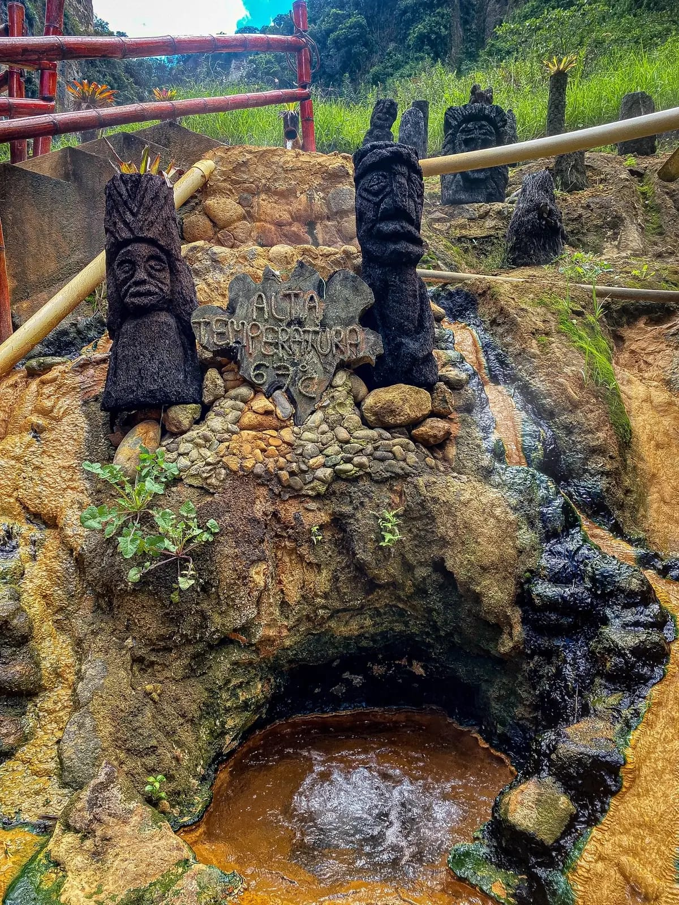
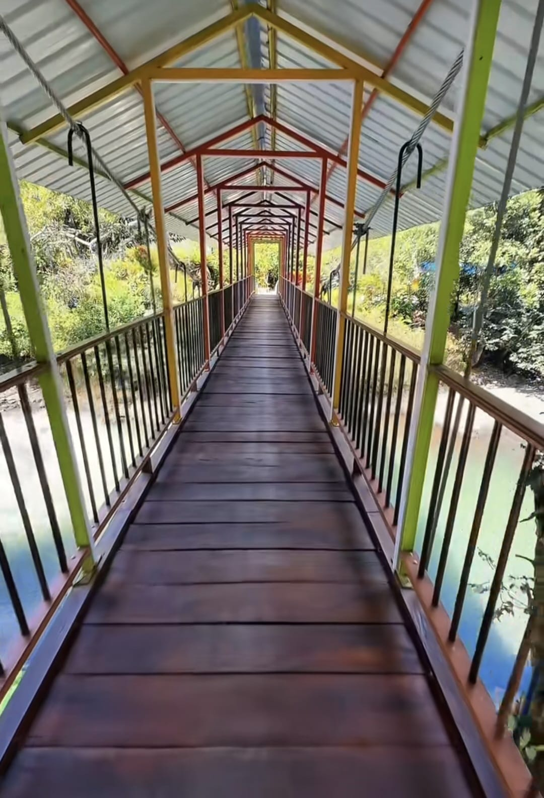
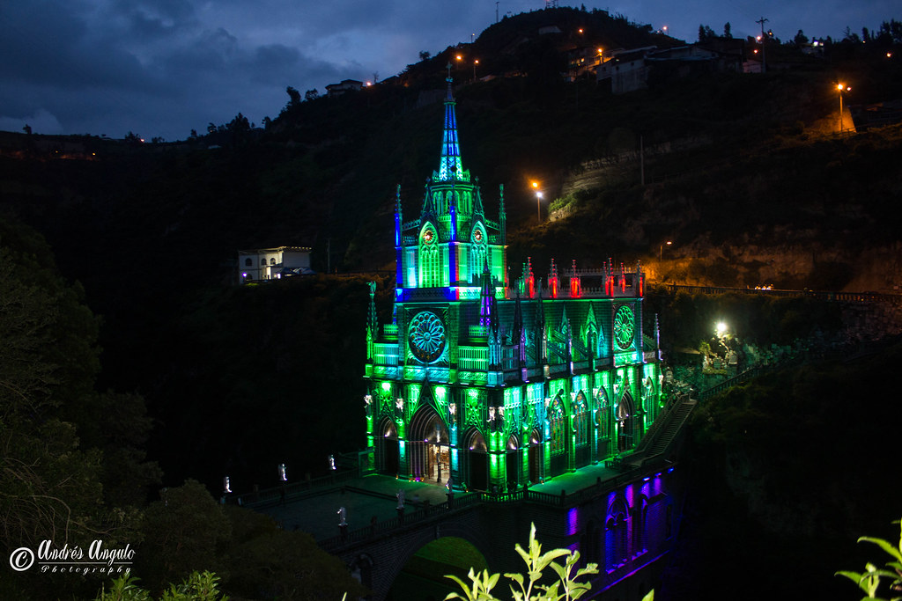

Naturaleza
Naturaleza
Laguna de La Cocha
El Encano, Pasto, Nariño
Un refugio andino donde las montañas abrazan el agua y la niebla cuenta historias. Descubre el encanto místico del segundo lago más grande de Colombia.
★★★★★ 4.8
$150.000 COP
 Religioso
Religioso
Santuario de Las Lajas
Ipiales, Nariño
Una joya arquitectónica que desafía el abismo y parece suspendida en el cielo. Déjate maravillar por el templo más hermoso del mundo, tallado en el corazón de un cañón.
★★★★★ 4.5
$155.000
 Aventura
Aventura
Volcan galeras
Pasto, Nariño
El Volcán Galeras es uno de los paisajes más representativos de Nariño. Su entorno natural alberga bosques andinos, páramos y una gran diversidad de flora y fauna.
★★★★★ 5.0
$200.000
 Playa y costa
Playa y costa
Tumaco
Tumaco, Nariño
Tumaco es un destino de la costa pacífica de Nariño, reconocido por sus playas, sus paisajes tropicales y su riqueza cultural.
★★★★★ 4.7
$180.000
 Cultura
Cultura
Museo del Oro
Pasto, Nariño
Este espacio cultural permite conocer piezas arqueológicas y expresiones artísticas relacionadas con las culturas ancestrales de la región.
★★★★★ 5.0
$40.000
 Naturaleza
Naturaleza
Las Gradas de Belen
Sandona, Nariño
Las Gradas de Belén representan uno de los miradores y paisajes más hermosos de Sandoná, Nariño. Este encantador sendero conecta la tradición artesanal de la región con la majestuosidad de su entorno natural y su famosa cascada.
★★★★★ 4.7
$195.000

NaturalezaLaguna de la Cruz-Tajumbina
Cruz, Nariño
Ubicadas en el majestuoso Complejo Volcánico Doña Juana, estas termales invitan a la desconexión total. Un espacio de paz para revitalizar el cuerpo con lodos terapéuticos y paisajes andinos inolvidables.
★★★★★ 4.5
$120.000

NaturalezaKatza-pi
Ricaurte, Nariño
Katza-pi, en Ricaurte (Nariño), es un refugio natural de aguas cristalinas cuyo nombre en lengua Awá significa "Río Grande". Bañado por el imponente Río Güiza, este rincón invita al ecoturismo, la calma y una conexión profunda con la biodiversidad del piedemonte
★★★★★ 4.3
$100.000
¡Ups! No encontramos destinos
Intenta cambiar tu búsqueda o ajustar los filtros para descubrir otros lugares de Nariño.
Laguna de La Cocha
El Encano, Pasto, Nariño
Descripción
Un refugio andino donde las montañas abrazan el agua y la niebla cuenta historias. Descubre el encanto místico del segundo lago más grande de Colombia. Ubicada en el corregimiento de El Encano, cerca de Pasto, la Laguna de La Cocha es uno de los paisajes naturales más emblemáticos de Nariño. Rodeada de montañas andinas, se destaca por sus coloridas casas de madera junto al agua, los paseos en lancha, las visitas a la Isla de La Corota y su gastronomía tradicional, especialmente la trucha arcoíris.
Servicios incluidos
- Viaje en lancha
- Entrada e ingreso a la isla de la corota
- Senderismo guiado
- Transporte ida y vuelta
Cuyeyos a viajar
$150.000 COP
Cargando reseñas...
¡Cuéntanos tu experiencia!
Califica tu visita y comparte tu opinión.

Las Lajas
Ipiales, Pasto, Nariño
Descripción
Una joya arquitectónica que desafía el abismo y parece suspendida en el cielo. Déjate maravillar por el templo más hermoso del mundo, tallado en el corazón de un cañón. Ubicado en el municipio de Ipiales, sobre el impresionante cañón del río Guáitara, el Santuario de Las Lajas es uno de los monumentos más imponentes y visitados de Colombia. Esta basílica de estilo neogótico es célebre mundialmente por su arquitectura, los puentes que cruzan el abismo, la devoción de sus peregrinos y la pintura de la Virgen milagrosa plasmada directamente sobre la piedra laja de la montaña
Servicios incluidos
- Almuerzo tipico andino
- Refriguerio
- Sesion fotografica
- Transporte ida y vuelta
Viajando ando
$155.000
Cargando reseñas...
¡Cuéntanos tu experiencia!
Califica tu visita y comparte tu opinión.
Volcan Galeras
Pasto, Nariño
Descripción
El Volcán Galeras es uno de los paisajes más representativos de Nariño. Su entorno natural alberga bosques andinos, páramos y una gran diversidad de flora y fauna, convirtiéndose en un verdadero santuario ecológico e ícono cultural del sur de Colombia. En sus laderas dominadas por la niebla y el frailejón, habitan numerosas especies de aves y mamíferos endémicos, mientras que sus senderos resguardan la historia geológica y la identidad mestiza e indígena de una región caracterizada por la majestuosidad de la cordillera de los Andes.
Servicios incluidos
- Almuerzo y refriguerio
- Transporte de ida y vuelta
- Senderismo guiado
- Detalle caracteristico de la zona
viaje cultural
$200.000 COP
Cargando reseñas...
¡Cuéntanos tu experiencia!
Califica tu visita y comparte tu opinión.
Tumaco
Tumaco, Nariño
Descripción
Donde la selva se funde con el mar al ritmo de la marimba. Déjate conquistar por la magia ancestral, las playas exóticas y el sabor único del Pacífico nariñense. En esta tierra de manglares infinitos y calidez humana, el sonido de los tambores y los cantos de las cantadoras narran historias de tradición y resistencia. Desde la tranquilidad de sus playas y la exuberancia de su biodiversidad, hasta su inigualable gastronomía a base de coco y mariscos frescos, Tumaco te invita a vivir una experiencia sensorial inolvidable donde la naturaleza y la cultura afrocolombiana laten en un mismo corazón.
Servicios incluidos
- Viaje en lancha
- Sesion fotografica
- Almuerzo tipico
- Transporte ida y vuelta
Agente uno
$180.000 COP
Cargando reseñas...
¡Cuéntanos tu experiencia!
Califica tu visita y comparte tu opinión.
Museo del oro
Pasto, Nariño
Descripción
Este espacio cultural permite conocer piezas arqueológicas y expresiones artísticas relacionadas con las culturas ancestrales de la región. A través de sus salas de exposición, el Museo del Oro Nariño del Banco de la República rinde un homenaje a la orfebrería, la cerámica y las tradiciones de sociedades milenarias como Tuza, Capulí y Piartal. Con recorridos guiados, talleres didácticos y colecciones interactiva, los visitantes pueden sumergirse en el significado espiritual, simbólico y cotidiano de los antiguos pobladores de los Andes nariñenses, haciendo de este lugar un punto imprescindible para conectar con el patrimonio y la identidad cultural del departamento.
Servicios incluidos
- Transporte de ida y vuelta
- Refrigerio
- Materiales didacticos
Pastusitos 16
$40.000 COP
Cargando reseñas...
¡Cuéntanos tu experiencia!
Califica tu visita y comparte tu opinión.
Las Gradas de Belen
Sandona, Nariño
Descripción
Las Gradas de Belén representan uno de los miradores y paisajes más hermosos de Sandoná, Nariño. Este encantador sendero conecta la tradición artesanal de la región con la majestuosidad de su entorno natural y su famosa cascada. A medida que se asciende por este icónico recorrido peatonal, los visitantes disfrutan de un ambiente lleno de aire puro, vegetación exuberante y espectaculares panorámicas sobre el valle, donde se respira la historia y el talento de los célebres artesanos del sombrero de paja toquilla que caracterizan a esta cálida tierra andina.
Servicios incluidos
- Almuerzo y Refriguerio
- Sesion Fotografica
- Ingreso a las difrentes atracciones de la zona
- Transporte ida y vuelta
A por los montes
$195.000 COP
Cargando reseñas...
¡Cuéntanos tu experiencia!
Califica tu visita y comparte tu opinión.
Laguna de la Cruz-Tajumbina
Cruz, Nariño
Descripción
Ubicadas en el majestuoso Complejo Volcánico Doña Juana, estas termales invitan a la desconexión total. Un espacio de paz para revitalizar el cuerpo con lodos terapéuticos y paisajes andinos inolvidables. Este lugar destaca por sus fuentes naturales de agua tibia con minerales de origen volcánico, ideales para descansar, relajar los músculos y aliviar el estrés del día a día. Además de disfrutar de los baños térmicos, los visitantes pueden aplicarse mascarillas de barro natural, caminar por los senderos de montaña y contemplar la vegetación nativa de la región. Es un destino perfecto tanto para ir en familia como con amigos, ofreciendo un ambiente tranquilo, aire puro y una experiencia completa de bienestar en medio de la naturaleza.
Servicios incluidos
- Ingreso a tajumbina
- Transporte ida y vuelta
- Refrigerio
A viajar
$120.000 COP
Cargando reseñas...
¡Cuéntanos tu experiencia!
Califica tu visita y comparte tu opinión.
Katza-pi
Ricaurte, Nariño
Descripción
Katza-pi, en Ricaurte (Nariño), es un refugio natural de aguas cristalinas cuyo nombre en lengua Awá significa "Río Grande". Bañado por el imponente Río Güiza, este rincón invita al ecoturismo, la calma y una conexión profunda con la biodiversidad del piedemonte. En este espacio, los visitantes pueden disfrutar de balnearios naturales de agua fresca, recorrer senderos rodeados de selva tropical y observar diversas especies de aves y plantas nativas. Además, al estar ubicado en territorio de la comunidad indígena Awá, la visita permite conocer más sobre el cuidado del medio ambiente y las costumbres locales. Es un plan ideal para quienes buscan nadar, hacer caminatas ecológicas y pasar un día de descanso al aire libre en un entorno natural bien conservado.
Servicios incluidos
- Entrada a katza-pi
- Senderismo guiado
- Transporte ida y vuelta
Cuyeyos a viajar
$100.000 COP
Cargando reseñas...
¡Cuéntanos tu experiencia!
Califica tu visita y comparte tu opinión.
¡Bienvenido de nuevo!
Inicia sesión para continuar o crea una cuenta para comenzar.